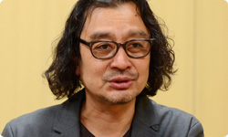
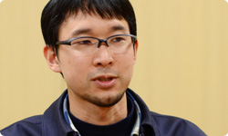
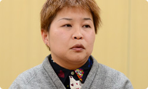
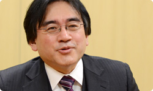

<div class="l-category-local-header">
<div class="category-local-header">
<div class="category-local-heading"><span>社長が訊く</span>
<div class="category-local-sub">IWATA ASKS


<div class="l-soft-topic-path is-block">
<div class="l-soft-topic-path-inner">
<div class="soft-topic-path">
<ul class="topic-path"><li class="topic-path-item"><span>ゲーム＆ワリオ</span></li></ul>


<div id="page-container">
<header class="interviewheader">
<h2 class="interviewheader__ttl"><span class="subtext">社長が訊く</span>『ゲーム＆ワリオ』</h2>

</header>
<div class="hero-container">
<div class="hero__img">
<p class="hero__note">本文の一部を引用される場合は、必ず、本ページのURLを明記、<br>または本ページへのリンクをしていただくようお願いいたします。

<div class="pageindex-container">
<p class="pageindex__ttl">目次
<ul class="pageindex__body">
<li class="pageindex__item active">1. 「もっと乱れろ」</li>
<li class="pageindex__item">2. 便利でズルい入れ物</li>
<li class="pageindex__item">3. エネルギーをかけた１６種類のゲーム</li>
<li class="pageindex__item">4. “オールスター応援状態”</li>
<li class="pageindex__item">5. 『ゲーマー』</li>
<li class="pageindex__item">6. 『メイドインワリオ』シリーズの集大成</li>
</ul>

<div class="interview-container">
<h3 class="interview__ttl">1. 「もっと乱れろ」</h3>

岩田
: 目の前に並んだ３人の顔を見ると、<br>「わたしは今日、何をさせられるんだろう？」って、<br>不安に思ってしまうんですが（笑）。


一同
: （笑）


阿部
: 『うつすメイドインワリオ』（※1）の時の<br>アレ（※2）のことですね（笑）。

※1『うつすメイドインワリオ』＝２００８年１２月にニンテンドーDSiウェアとして配信がはじまった、うつす瞬間アトラクション。
※2アレ＝『うつすメイドインワリオ』には、ゲームプレイ中のプレイヤーの表情が動画で録画される仕組みがあり、岩田のプレイ中の動画が「アレ」として公開された。くわしくは、<span>社長が訊く『うつすメイドインワリオ』</span>を参照。


岩田
: 今回は、何もさせられずにすむんですよね？


坂本
: そうですね、はい（笑）。


岩田
: 今日は『ゲーム＆ワリオ』が完成し、<br>開発にかかわったみなさんから話をお訊きしますが、<br>それぞれ何を担当されたのかを教えてください。


坂本
: 企画開発部の坂本です。<br>『メイドインワリオ』シリーズ（※3）では<br>僕はご意見番的な感じでかかわることが多いんですけど、<br>今回も同じように、阿部さんの相談にのったり、<br>自分の意見を述べたりしていました。





※3『メイドインワリオ』シリーズ＝シリーズ１作目は、ゲームボーイアドバンス用ソフトとして２００３年３月に発売された、瞬間アクションゲームのシリーズ。これまでWiiウェアなども含めて８作が発売、配信されている。


阿部
: 企画開発部の阿部です。<br>僕は、ディレクション担当ということで、<br>全体の仕様を考えたり、<br>決めていったりしたのですが、<br>実際につくる部分のところでは、<br>横にいる森さんにお願いしながら、<br>開発を進めてきました。




森
: インテリジェントシステムズ（※4）の森です。<br>わたしはイズ（※5）側のディレクションを担当しました。<br>まず、阿部さんから「こんなゲームをつくりたい」<br>というお話を受けてから、それをイズで細かく詰めて、<br>実装していくようなことを主にしていました。





※4インテリジェントシステムズ＝『ファイアーエムブレム』シリーズや『ペーパーマリオ』シリーズなどの任天堂ソフト、歴代ハードの開発支援ツールの開発をしている会社。
※5イズ＝株式会社インテリジェントシステムズの通称。


岩田
: さて、ずいぶん前のことになりますが、<br>いちばん最初に阿部さんが<br>このプロジェクトを担当することになったとき、<br>どんな状態で引き受けることになったんですか？


阿部
: 最初は「Wii U本体にゲームアプリを載せよう」<br>ということで動きはじめたプロジェクトだったんです。<br>途中から僕が担当になって、<br>Wii U GamePadを使って、どんな遊びができるのかを<br>まず自分ひとりで考えることになりました。


岩田
: 最初はひとりではじめて、<br>途中からイズさんといっしょに<br>開発を進めるようになったんですね。


阿部
: はい。なんとなく方向性が見えてきた段階で、<br>実際にものをつくって、自分で触ってみないと<br>おもしろさがわかりませんので、<br>開発をイズさんにお願いすることにしました。


岩田
: これまで『メイドインワリオ』シリーズで<br>勝手知ったるチームだから、ですよね？


阿部
: そうですね（笑）。


岩田
: 森さんが最初に話を聞いたのは<br>いつくらいだったんですか？


森
: ２年前の１月です。その時、<br>「Wii Uという新しいゲーム機には<br>　こういう機能があります」<br>ということをはじめて教えていただいて、<br>そこからがスタートになりました。


岩田
: つまり、そこから２年くらい<br>つくりつづけていた、ということですよね。


森
: そうですね、はい。


岩田
: そもそも、開発のはじまりからいきなり<br>いまのかたちをめざしていたわけではありませんでしたね？


阿部
: そうですね。もともとWii U本体の<br>本体内蔵ソフトとして企画がはじまりましたので、<br>『メイドインワリオ』シリーズとして考えていたわけではなかったんです。<br>時期的には、Ｅ３が控えていましたので、<br>「ショーに出して、みんなが手軽に遊べるものを」<br>ということでつくりはじめました。


岩田
: ２０１１年６月のＥ３（※6）ですね。

※6２０１１年６月のＥ３＝Electronic Entertainment Expo（エレクトロニック エンターテインメント エキスポ）の略で、年に１度、米国のロサンゼルスで開催されるコンピューターゲーム関連の見本市のこと。２０１１年のＥ３では、世界ではじめてWii Uが公開された。


阿部
: はい。今回の『ゲーム＆ワリオ』には<br>１６種類のゲームが入っていますけど、<br>そのひとつ<span>『パイレーツ』</span>の原型になるものを、<br>『SHIELD POSE』というタイトルで出展しました。<br>「Wii U GamePadを盾のように構えて、<br>　テレビ画面から飛んでくる矢を受ける」<br>というゲームです。


岩田
: その当時は、<br>どんなことを考えてつくっていたんですか？




阿部
: 本体に内蔵するゲームでしたから、<br>特定の人にウケるような<br>個性的なものにするのではなく、<br>あらゆる層の人たちに楽しんでもらうことが<br>前提になりました。<br>ただ自分はこれまで、『メイドインワリオ』のチームで<br>はっちゃけたことをずっとしてきましたけど、<br>今回はそれを抑え込まなきゃいけなくて・・・。


岩田
: 心のなかで、<br>ブレーキを踏まなきゃいけなかったんですね。


阿部
: はい。Wii Uに内蔵するゲームなので、<br>「新しい機能がわかりやすく伝わるようなものを<br>　いかにきれいにまとめようか」と、<br>そんなことばかり考えてつくっていました。


岩田
: 森さん、行儀良くすることを求められているようで<br>窮屈ではありませんでしたか？　


森
: そうですね。だから・・・<br>「ちょっとマジメにやらなあかんかな」と（笑）。


岩田
: いつものテイストは抑えて、<br>「今回はマジメにやらないと」<br>ということですね（笑）。


坂本
: でも、これまでの『メイドインワリオ』も<br>じつはマジメにつくってきたんですけどね。


岩田
: そうですよね。『メイドインワリオ』シリーズは、<br>大マジメにヘンなことを、やっているんですよね。


森
: そうです、そうです（笑）。<br>でも、あの時はそれではたぶん、<br>ダメだったんです。


阿部
: そうですね。<br>だから、マニアックなネタとか、おもしろいネタでも、<br>特定の人にしかウケないようなことは<br>できるだけ排除しながらつくっていました。


岩田
: このプロジェクトの最初の構造が<br>やはりこのチームには<br>窮屈だったのかもしれませんね。


阿部
: そうですね。


岩田
: 坂本さん、傍（はた）から見ていて、<br>どう見えましたか？


坂本
: 「この人たちにそんなソフトは向いてるのかなあ」と（笑）。


岩田
: 坂本さんが言うと説得力がありますねぇ（笑）。


坂本
: だから、自分としても気になっていましたし、<br>「困ってるんやろうな」と思っていたんですけど、<br>そのような枠組みのソフトに対しては、<br>自分も調子にのって<br>意見を言えないところもありまして。


岩田
: だから、心配しつつも、<br>ちょっと距離を置いて見ていたんですね。


坂本
: そうです。<br>その当時は、深くかかわっていなかったです。<br>阿部さんから「こういうゲームを考えています」<br>という話を聞いて、<br>「それはおもしろいんじゃないの」<br>という感想を述べたりはしていましたけど、<br>じつは心のなかでは、<br>「これ本当に、マジメにつくるのかなあ」と。


岩田
: ははは（笑）。<br>まるで他人事のように。


坂本
: 実際、そうだったんです。


森
: でも、坂本さんに<br>最初に『パイレーツ』の原型を触ってもらったとき、<br>「もっと乱れろ」と言っていましたよね？


坂本
: え、そんなこと言った？


森
: はい（笑）。


一同
: （笑）


岩田
: やっぱり言っちゃうんだ（笑）。


坂本
: ・・・言ってたみたいですね（笑）。<br>古い話なので忘れてましたけど。


森
: でも、「ありがたいな」と思いました。


岩田
: 「待ってました！」みたいな感じですか？


森
: そうです、そうです。<br>「もうちょっとはっちゃけていいんだ」って（笑）。


岩田
: その時、「誰か、自分の背中を押してくれ」<br>と、みんなが思っていたのかもしれませんね。


<li class="pagination-next"><span>2. 便利でズルい入れ物</span></li>
</ul>
<div class="listbtn-container">
<p class="listbtn__item">社長が訊く 一覧

